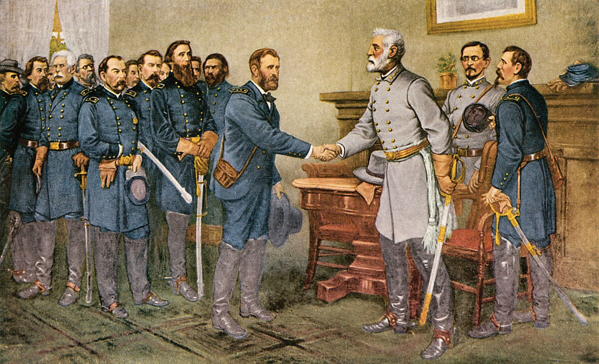

The Surrender At
Appomattox Courthouse

The Surrender at Appomattox Courthouse occurred in April 1865 during the American Civil War. Confederate General Robert E. Lee, thought that the Confederate would lose since the Union had way more resources and they were well prepared for a war so he gave up to the Union General Ulysses S. Grant at Appomattox Courthouse. This surrender signaled the end of the Civil War. General Grant was kind enough to not betray General Ulysses and the confederate soldiers, letting them keep their horses and providing them with food. This event was a major event because it signaled the Northern states and the Southern states would reunite.
Connection to Texas History
The Surrender at Appomattox Courthouse holds importance in Texas history as it shows the conclusion of the American Civil War, a conflict in which Texas played a crucial role. While the event occurred in Virginia, it deeply effects Texas since the state was part of the Confederate states that decided to go against the Union. This moment resulted changes in Texas, leading to the state to change its relationship with the Union. This simple event even caused changes in rules of Texas. The surrender not only marked the end of the conflict but also helped for Texas to join into the United States.
This event connects with Texas History because it has shaped Texas. If The Surrender at Appomattox Courthouse never happened, then Texas would have had to face aggressive force from the Union since it was way more powerful than the Confederate and definitely had a chance to win through violence. Texas could also still be part of the Confederate if some other country/countries decided to step in and help the Confederate. But even if the Confederate was still there it is likely to not have slavery since most countries would then not help it.
About
This website is made only for a school project and doesn't mean to offend anybody
or any historical event.
The purpose of this site is solely to showcase the history of the surrender at Appomattox courthouse, which took place on April 9, 1865 in Virginia.